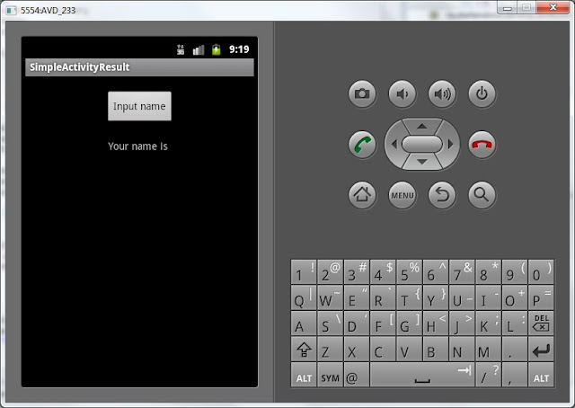
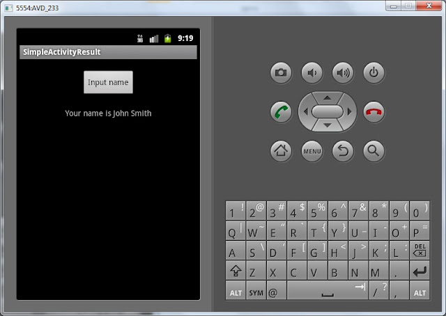
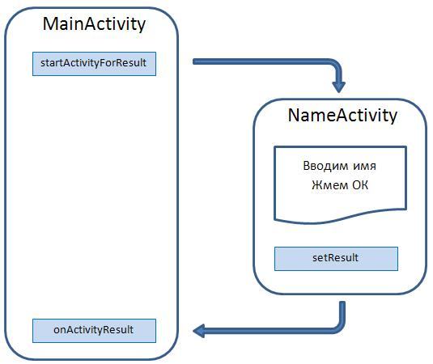

В этом уроке:
- вызываем Activity с возвратом результата
Бывает необходимость вызвать Activity, выполнить на нем какое-либо действие и вернуться с результатом. Например – при создании SMS. Вы жмете кнопку «добавить адресата», система показывает экран со списком из адресной книги, вы выбираете нужного вам абонента и возвращаетесь в экран создания SMS. Т.е. вы вызвали экран выбора абонента, а он вернул вашему экрану результат.
Об этом можно почитать здесь и здесь.
Давайте посмотрим на практике. Создадим приложение с двумя экранами. С первого экрана будем вызвать второй экран, там вводить данные, нажимать кнопку и возвращаться на первый экран с введенными данными. Например, будем таким образом запрашивать имя.
Создадим проект:
Project name: P0291_SimpleActivityResult
Build Target: Android 4.0
Application name: SimpleActivityResult
Package name: ru.startandroid.develop.p0291simpleactivityresult
Create Activity: MainActivity
Открываем main.xml и нарисуем такой экран:
<?xml version="1.0" encoding="utf-8"?>
<LinearLayout
xmlns:android="http://schemas.android.com/apk/res/android"
android:layout_width="fill_parent"
android:layout_height="fill_parent"
android:orientation="vertical">
<Button
android:id="@+id/btnName"
android:layout_width="wrap_content"
android:layout_height="wrap_content"
android:layout_gravity="center_horizontal"
android:layout_margin="20dp"
android:text="Input name">
</Button>
<TextView
android:id="@+id/tvName"
android:layout_width="wrap_content"
android:layout_height="wrap_content"
android:layout_gravity="center_horizontal"
android:text="Your name is ">
</TextView>
</LinearLayout>На экране TextView, который будет отображать имя, и кнопка, которая будет вызывать экран для ввода.
Кодим MainActivity.java:
package ru.startandroid.develop.p0291simpleactivityresult;
import android.app.Activity;
import android.content.Intent;
import android.os.Bundle;
import android.view.View;
import android.view.View.OnClickListener;
import android.widget.Button;
import android.widget.TextView;
public class MainActivity extends Activity implements OnClickListener {
TextView tvName;
Button btnName;
/** Called when the activity is first created. */
@Override
public void onCreate(Bundle savedInstanceState) {
super.onCreate(savedInstanceState);
setContentView(R.layout.main);
tvName = (TextView) findViewById(R.id.tvName);
btnName = (Button) findViewById(R.id.btnName);
btnName.setOnClickListener(this);
}
@Override
public void onClick(View v) {
Intent intent = new Intent(this, NameActivity.class);
startActivityForResult(intent, 1);
}
@Override
protected void onActivityResult(int requestCode, int resultCode, Intent data) {
if (data == null) {return;}
String name = data.getStringExtra("name");
tvName.setText("Your name is " + name);
}
}Определяем TextView и кнопку, настраиваем обработчик. В методе обработчика onClick создаем Intent, указываем класс второго Acivity (которое создадим чуть позже, на ошибку не обращайте внимания). Для отправки используем startActivityForResult. Отличие от обычного startActivity в том, что MainActivity становится «родителем» для NameActivity. И когда NameActivity закрывается, вызывается метод onActivityResult в MainActivity, тем самым давая нам знать, что закрылось Activity, которое мы вызывали методом startActivityForResult.
В startActivityForResult в качестве параметров мы передаем Intent и requestCode. requestCode – необходим для идентификации. В этом уроке мы его укажем, но не будем использовать по назначению. В следующем же уроке разберемся подробнее, зачем он нужен.
В onActivityResult мы видим следующие параметры:
requestCode – тот же идентификатор, что и в startActivityForResult. По нему определяем, с какого Activity пришел результат.
resultCode – код возврата. Определяет успешно прошел вызов или нет.
data – Intent, в котором возвращаются данные
requestCode и resultCode мы пока использовать не будем, подробнее рассмотрим их на следующем уроке. А из data мы будем получать объект по имени name и выводить значение в TextView.
Если мы извлекаем из Intent объект с именем name, значит надо, чтобы кто-то его туда положил. Этим займется NameActivity.
Создадим экран name.xml:
<?xml version="1.0" encoding="utf-8"?>
<LinearLayout
xmlns:android="http://schemas.android.com/apk/res/android"
android:layout_width="match_parent"
android:layout_height="match_parent"
android:orientation="vertical">
<LinearLayout
android:id="@+id/linearLayout1"
android:layout_width="match_parent"
android:layout_height="wrap_content"
android:layout_margin="10dp">
<TextView
android:id="@+id/textView1"
android:layout_width="wrap_content"
android:layout_height="wrap_content"
android:text="Name">
</TextView>
<EditText
android:id="@+id/etName"
android:layout_width="wrap_content"
android:layout_height="wrap_content"
android:layout_marginLeft="10dp"
android:layout_weight="1">
<requestFocus>
</requestFocus>
</EditText>
</LinearLayout>
<Button
android:id="@+id/btnOK"
android:layout_width="wrap_content"
android:layout_height="wrap_content"
android:layout_gravity="center_horizontal"
android:text="OK">
</Button>
</LinearLayout>В поле ввода будем вводить имя и жать кнопку OK.
Создаем класс NameActivity и прописываем его в манифесте:
package ru.startandroid.develop.p0291simpleactivityresult;
import android.app.Activity;
import android.content.Intent;
import android.os.Bundle;
import android.view.View;
import android.view.View.OnClickListener;
import android.widget.Button;
import android.widget.EditText;
public class NameActivity extends Activity implements OnClickListener {
EditText etName;
Button btnOK;
@Override
protected void onCreate(Bundle savedInstanceState) {
// TODO Auto-generated method stub
super.onCreate(savedInstanceState);
setContentView(R.layout.name);
etName = (EditText) findViewById(R.id.etName);
btnOK = (Button) findViewById(R.id.btnOK);
btnOK.setOnClickListener(this);
}
@Override
public void onClick(View v) {
Intent intent = new Intent();
intent.putExtra("name", etName.getText().toString());
setResult(RESULT_OK, intent);
finish();
}
}Определяем поле ввода и кнопку, прописываем обработчик. В методе onClick мы создаем Intent и помещаем в него данные из поля ввода под именем name. Обратите внимание, мы никак не адресуем этот Intent. Т.е. ни класс, ни action мы не указываем. И получается, что непонятно куда пойдет этот Intent. Но метод setResult знает, куда его адресовать - в «родительское» Activity, в котором был вызван метод startActivityForResult. Также в setResult мы передаем константу RESULT_OK, означающую успешное завершение вызова. И именно она передастся в параметр resultCode метода onActivityResult в MainActivity.java. Это мы подробнее разберем на следующем уроке. Далее методом finish мы завершаем работу NameActivity, чтобы результат ушел в MainActivity.
Все сохраним и запустим приложение.
Видим первый экран:

Жмем кнопку, чтобы попасть на экран ввода имени.
Вводим имя и жмем ОК

Снова первый экран, отобразивший полученные данные.

Попробуем подытожить. В MainActivity мы создали Intent с явным указанием на класс NameActivity. Запустили этот Intent с помощью метода startActivityForResult. NameActivity отобразилось, мы ввели имя и нажали кнопку. Создался Intent, в который поместилось введенное нами имя. Метод setResult знает, что Intent надо вернуть в Activity, которое выполнило вызов startActivityForResult, т.е. – MainActivity. В MainActivity за прием результатов с вызванных Activity отвечает метод onActivityResult. В нем мы распаковали Intent и отобразили полученные данные в TextView.
Пока необходимо просто понять схему вызова и возврата.

На следующем уроке мы сделаем расширенный и более показательный пример использования этой технологии.